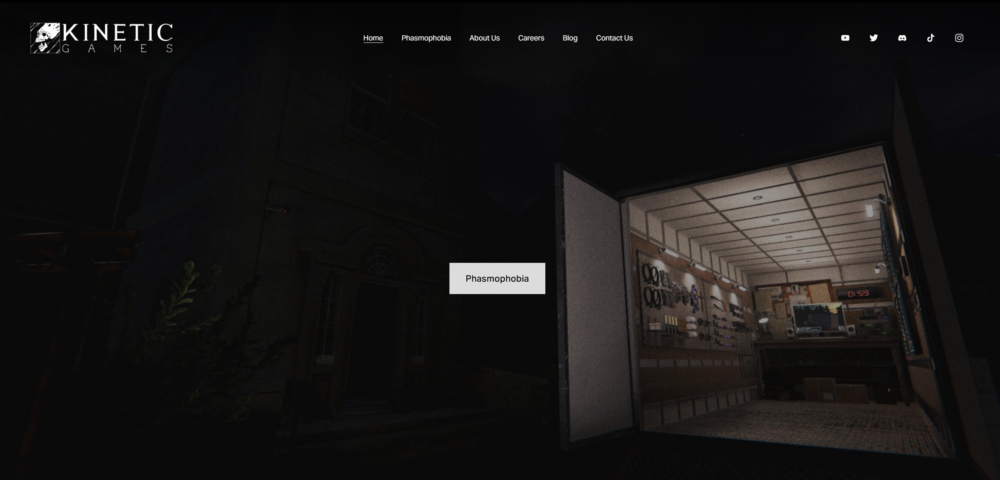

The website for Phasmophobia has a simple about us page which gives small amounts of information about the company.
The phasmophobia section gives information on the game with images to demonstrate what you do within the game. Reviews to the game can also be seen at the bottom.
The blog section shows all the recent updates in detail which expands when you click on it.
At the top left of the website, you can see the company logo whilst the navigation bar is in the top center and their social media pages are in the top right.
Phasmophobia keeps the game in the dark most of the time and leaves the player with a flashlight. The game mostly being in the dark makes it scarier to wander around the area.
The Game page includes a trailer of the game and shows where you can buy it on the right side along with the price.
The news page shows the past few versions of the game and you can see each version in detail about what they changed. There is also a search bar to allow users to search for a specific version.
The map section brings up an interative map which allows you to see the map of the game and view key landmarks.
In the top left, you can see the game logo whilst the company logo is in the top right and the navigation bar is at the top. The game forum can be found along with their social media. The stable build version is also visible in the top left.
Project Zomboid has a realistic survival system including hunger, thirst and sleep. These are things I would like to try to include in the game when I do the final project but I would at least add hunger.